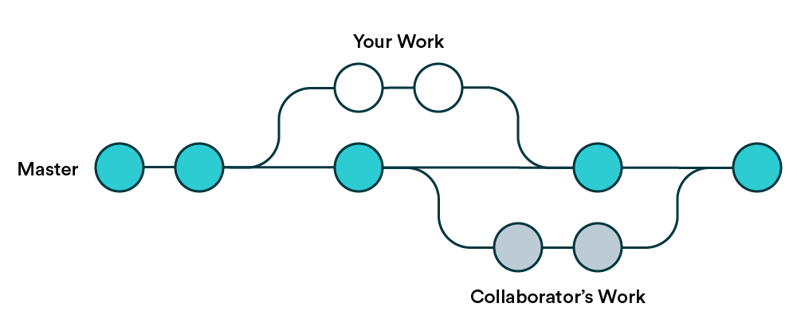

Development environments, system commands, and version control
Introduction to IDEs
There are several integrated development environments (IDEs) that provide a comprehensive set of tools and features for data science. IDEs facilitate coding, data processing and analysis, visualisation, and version control. They also help in producing files to share your work, whether you’re using scripts or notebook-style documents. We are going to focus on three IDEs used for R and/or Python: RStudio, VS Code, and Positron.
RStudio
RStudio is an IDE specifically designed for R, a programming language widely used for statistical computing and graphics. It provides a user-friendly interface that integrates a code editor, a console, and tools for plotting, history, debugging, and package management. (see Figure 1).

VS Code
Visual Studio Code (VS Code) is a code editor developed by Microsoft that can be used with a wide range of programming languages, including R and Python. In contrast to RStudio, it is not a full-fledged IDE out of the box, but its rich ecosystem of extensions makes it very flexible for any data science project. See (Figure 2)
{kind=link}
Positron
Positron is a next-generation, free IDE for data science developed by Posit, the same company that makes RStudio. Built on the same foundation as VS Code, it is designed to support both R and Python. The interface of Positron integrates elements familiar from RStudio with the flexibility of VS Code.
{kind=link}
Key features and extensions of VS Code
VS Code’s power lies in its lightweight core and its extensible ecosystem. VS Code extensions support a wide range of languages and frameworks. Here are some of the most relevant
Core Features
IntelliSense: A code completion engine that provides intelligent, context-aware suggestions for variables, functions, and modules, along with helpful pop-up documentation.
Integrated Git: VS Code has built-in support for Git, allowing developers to manage version control directly within the editor.
Built-in Terminal: An integrated command-line terminal allows you to run shell commands, execute scripts, and manage your environment without switching applications.
Debugging: VS Code includes an interactive debugger that enables you to set breakpoints, inspect variables, and step through code to identify and fix bugs.
We will use only the basic extensions as described in the prerequisites. But it is worth exploring the extensions available on VS Code Marketplace.
The system shell and basic commands
A system shell is a program that acts as a command-line interface (CLI) to an operating system. It allows you to interact with the computer by typing text commands and executes them by passing them to the operating system’s kernel. The shell is where you can run scripts, manage files, and execute programs.
The commands will depend on the operative system you have in your computer. Windows use the Windows Command Prompt or PowerShell, while macOS and Linux use Bash/Zsh.
File & Directory Management
- Create a directory:
mkdir <directory_name> - Copy a file:
copy <source_file> <destination> - Move a file:
move <source_file> <destination> - Delete a file:
del <file_name> - Display file content:
type <file_name>
File & Directory Management
- Create a directory:
mkdir <directory_name> - Copy a file:
cp <source_file> <destination> - Move a file:
mv <source_file> <destination> - Delete a file:
rm <file_name> - Display file content:
cat <file_name>
Introduction to Version control
Git
Working with any type of digital file usually involves preparing it, revising and editing its contents, and sharing with others to get feedback. After completing at least one round of this process you can end up with several different versions of the same file. Are you familiar with Figure 4?

Git is a great tool that tracks changes to files over time, especially in text-based files such as scripts, allowing multiple people to work on the same project without overwriting each other’s work. When Git is used as a version control system, a full copy of the entire project history is stored, making it easy to keep track of any changes, and even revert any changes. By using Git, it is possible to have different alternative versions of the same project, i.e. repository, without the need for independent files or folders for each version.

GitHub
GitHub is a platform that provides hosting for Git repositories. As a cloud-based service GitHub works as a Hub for storing, sharing and collaborating with others. Some tools in GitHub, like pull requests for proposing changes, reviews for asking others to check your work, and issue tracking for monitoring things to be corrected or improved, ease the collaborative work in different projects. Other features (GitHub Actions) allow the automation of different processes, for example, building a web, and testing and deploying code.
To learn more about the different elements in GitHub, you can start exploring the GitHub skills courses.
Working with GitHub
Any Data Science project will benefit from having a clear file structure. The starting point will be a folder (a.k.a. repository) in which we will store the code, data and other relevant files. We are going to use both Git and GitHub for keeping track of all changes.
You might already be familiar with some key terms in a typical Git workflow: clone, commit, push, pull, or branch. Here is a useful cheat sheet.
There are two main ways of working with GitHub repositories in your machine: the gh command-line tool from the shell and the GitHub desktop graphical user interface. It is also possible to use the built-in IDEs’ extensions, but they generally have fewer features available. We will explore the different actions in the next session.
Practical:
You should have at least an IDE and a tool for using GitHub installed in your computer now. If you still need to install them, check the prerequisites for more information.
Exercise:
- Open the shell
- Create a folder called
reproducible-research - if you have the
ghcommand-line tool installed, try:gh repo clone tdscience/coursecd coursegh issue listgh issue create